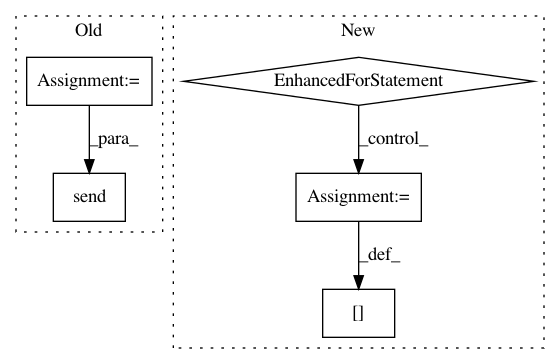

28ec5687220f562b3bd1b220ed80eded79c54824,steps/pytorch/callbacks.py,NeptuneMonitor,on_batch_end,#NeptuneMonitor#Any#,283
Before Change
self.batch_id = 0
def on_batch_end(self, metrics, *args, **kwargs):
batch_loss = metrics["batch_loss"]
self.epoch_loss_averager.send(batch_loss)
logs = {"epoch_id": self.epoch_id, "batch_id": self.batch_id, "batch_loss": batch_loss}
self.ctx.channel_send("batch_loss {}".format(self.random_name), x=logs["batch_id"], y=logs["batch_loss"])
After Change
self.batch_id = 0
def on_batch_end(self, metrics, *args, **kwargs):
for name, loss in metrics.items():
loss = loss.data.cpu().numpy()[0]
if name in self.epoch_loss_averagers.keys():
self.epoch_loss_averagers[name].send(loss)
else:
self.epoch_loss_averagers[name] = Averager()
self.ctx.channel_send("batch {} loss".format(name), x=self.batch_id, y=loss)
self.batch_id += 1
def on_epoch_end(self, *args, **kwargs):
self._send_numeric_channels()
In pattern: SUPERPATTERN
Frequency: 3
Non-data size: 5
Instances
Project Name: minerva-ml/open-solution-data-science-bowl-2018
Commit Name: 28ec5687220f562b3bd1b220ed80eded79c54824
Time: 2018-02-09
Author: kamil-kaczmarek@users.noreply.github.com
File Name: steps/pytorch/callbacks.py
Class Name: NeptuneMonitor
Method Name: on_batch_end
Project Name: GoogleCloudPlatform/PerfKitBenchmarker
Commit Name: aec6216f3d6540baaa5b0bb9badca5a00f84b74d
Time: 2020-08-10
Author: yuyanting@google.com
File Name: perfkitbenchmarker/linux_packages/ycsb.py
Class Name: YCSBExecutor
Method Name: RunStaircaseLoads
Project Name: minerva-ml/open-solution-data-science-bowl-2018
Commit Name: 28ec5687220f562b3bd1b220ed80eded79c54824
Time: 2018-02-09
Author: kamil-kaczmarek@users.noreply.github.com
File Name: steps/pytorch/callbacks.py
Class Name: TrainingMonitor
Method Name: on_batch_end